来源：https://w91h2gmtrn.feishu.cn/docx/Epcmdcw4booK0FxUAe2c9e8dnFy
读前说明：
1、本文干货内容量较大，有差不多一万五千字，通过商业方向、流量获取、营销转化、课程产品、培训交付、售后服务这六个方面，详细分享了入局AI培训赛道方向的认知、路径、经验、技巧、素材等实战干货。
2、写这篇干货， 前后花了差不多三周，也是一直在加干货内容及优化内容，想跟大家真正带来一些有用且有价值的实战干货。第一周做了主题+大纲目录规划，第二周做了内容撰写，初稿就写了一万两千字。
第三周，在这里也顺带感谢下我们生财 @瓜斯 及 @欢欢 帮忙提的内容完善建议，然后我又加了三千字，甚至把我在AI培训方面压箱底的家底干货都给掏出来了，最终完成这篇深度长文实战帖。
一些压箱底的干货刚开始我本来不准备写的，公开会跟自己增加竞争压力。但后来想了想，还是格局大点，极致的利他才会跟商业带来更多可能。
3、由于内容篇幅较长，包含的图片、附件等素材也较多，强烈建议电脑浏览器阅读更加方便高效。
大家好，我是乔帮主。
从2023年5月，我开始切入AI培训赛道。那时候有幸还参加过刀姐和SKY首期AIGC培训师的线下课，也算是国内最早一批从事AI培训赛道方向的AI培训师。
在过去两年，我在AI培训方面拿到了不错的结果，也积累了蛮多经验和收获。借助这个机会，把我在AI培训中的一些实战干货跟大家分享出来。
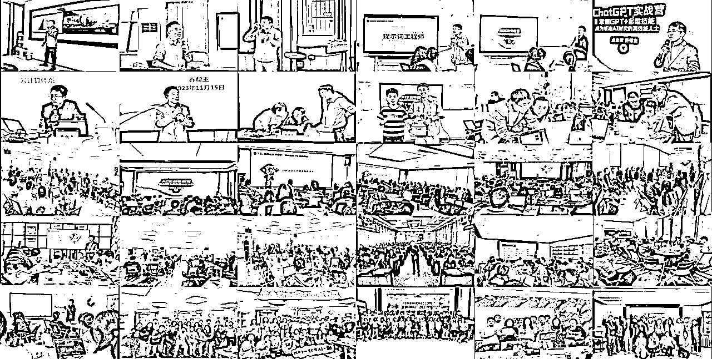
AI的落地，是AI人才的落地。当下及未来，市场及企业都需要大量的AI人才。特别是今年年初DeepSeek大火，AI培训的需求暴增，这不仅是一个很好的商机红利期，也标志着我们正处于AI时代的高速发展期。
我们不应该成为这个时代的旁观者，而应该成为积极的参与者和见证者！希望本文能给到正在从事或者想要进入AI培训赛道的圈友一些参考和借鉴。
所有业务都值得在短视频上重做一遍，所有行业都值得用AI重做一遍，所有产品也都值得用大模型重新升级。短视频是营销获客的必须，短视频是放大器。那AI便是效率和生产力的核心代表，AI是加速器！
AI将会重塑所有行业与业务，当然AI在培训领域将会有巨大潜力。帮忙市场及企业孵化、培养AI人才，当下是时代发展的红利期。
AI培训商业方向，我比较看好教育方向、企业方向、创业方向这三个方向，当然至于选择哪个方向。主要还是看自己的优势和兴趣聚焦在哪个方向。
K12是一个又爱又恨的领域，主要这方面人群多，需求大。但这方面流量都被大的头部机构掌控，所以赚不了大钱。但是特别适合独立老师，做做IP，搞搞私域，一年挣个百八十万也是很容易的。
我去年6月在成都参加一个大会，里面全是做K12的独立老师。很多老师，都还没做线上课程。单纯通过口碑做线下小班辅导，一年也有不错的收入。当然这里我们把线上课程做起来，对我们个体及小团队，也将会有不错的收入空间。
传统K12的课程方向，无非语数外提分、少儿编程/记忆力提升等学习力提升的课程。AI的切入，我很看好AI + 少儿编程方向。
我在去年暑假开过一期AI亲子课程，也跟培训机构开了一个面向14-15岁孩子的《AI编程与游戏制作》课程。最近也是在跟一个渠道合作，在推面向中小学的《AI编程入门与应用》课程，这块效果都不错，这块需求也是市场的红利期。
相应的课程大纲及介绍，也分享出来跟大家参考借鉴下：
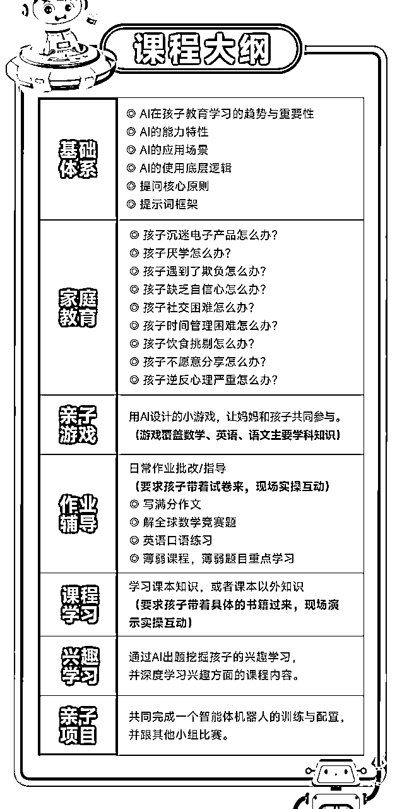
《AI亲子课》
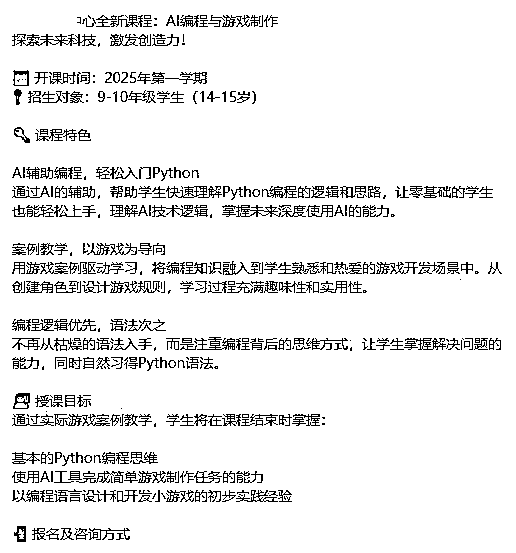
《AI编程与游戏制作》
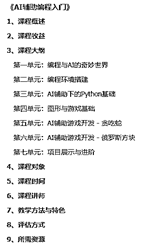
《AI编程应用》
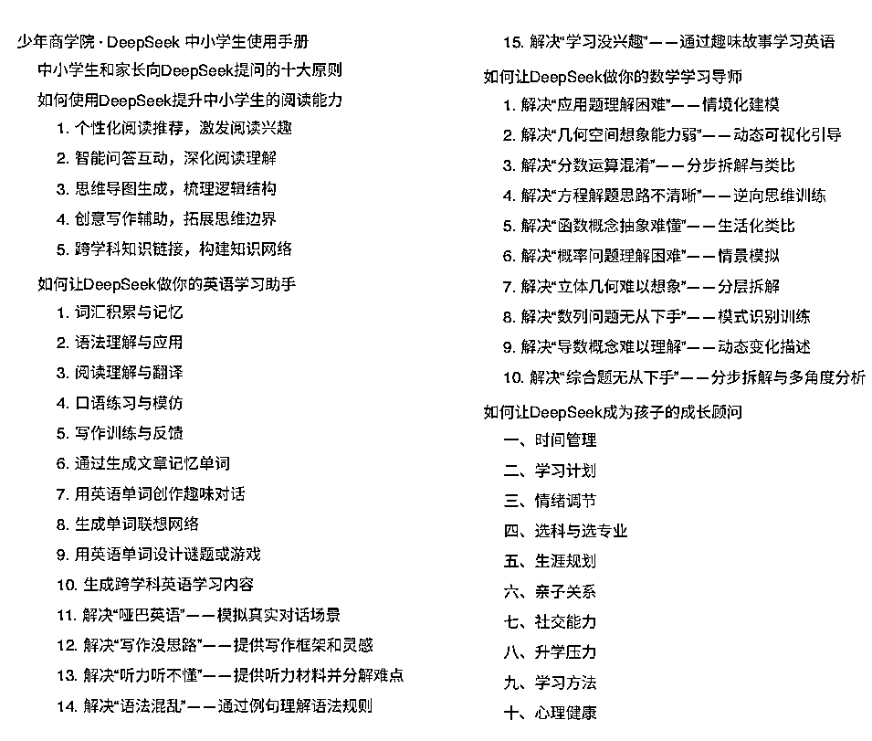
《DeepSeek中小学使用》
大学生求职就业培训，和K12教育培训一样，也是刚需中的刚需。传统大学生就业培训，这块虽然需求多，但是全国各个培训机构已经卷的不行。所以AI切入一个细分岗位，我觉得将是一个差异化 + 弯道超车的好机会。
比如产品、研发、运维、运营作为企业岗位四剑客，在这里面通过AI切入，为大学生提供体系+专业化的就业课程，也是一个很好的赛道方向。
知乎推的AI大模型开发就业课程，这两年也一直在公域推这块课程：
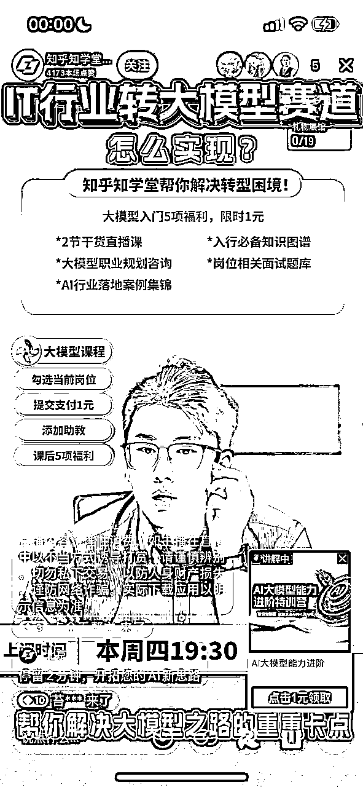
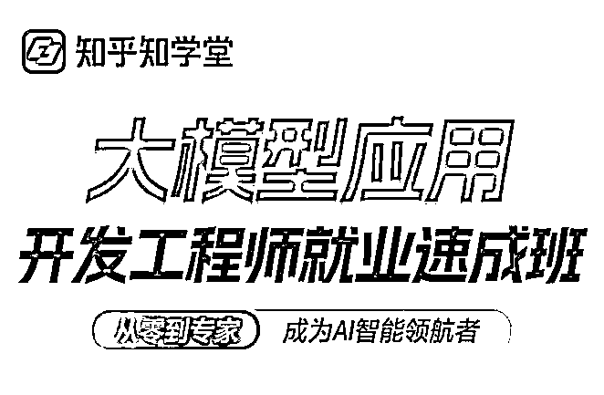
头部IT培训机构达内也推了大模型开发课程：
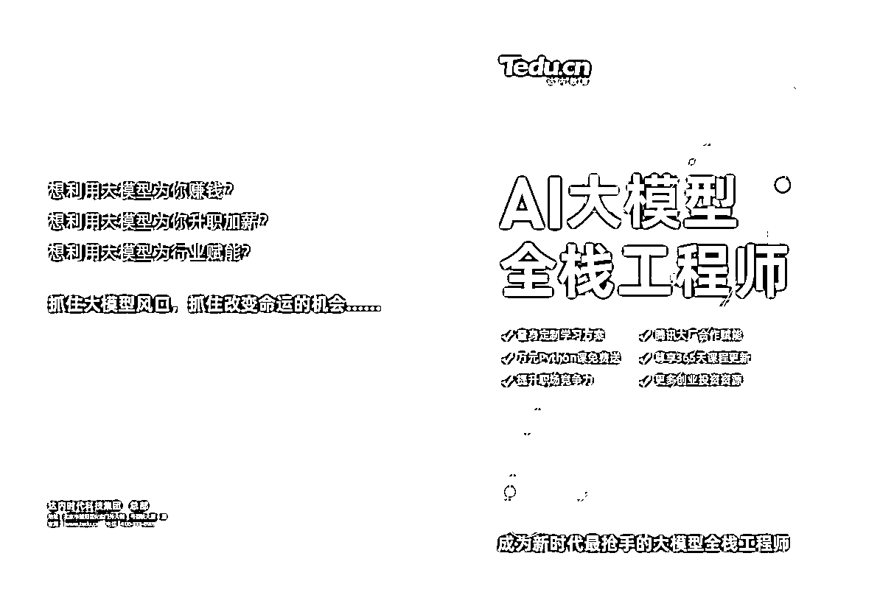
也在抖音经常刷到网易云课程的AI产品经理课程：
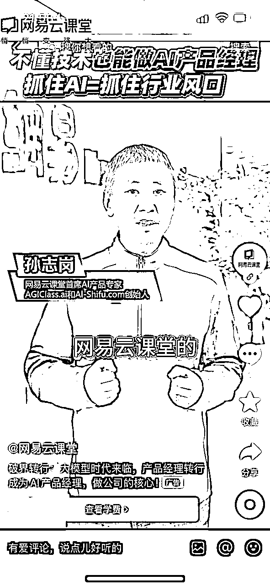
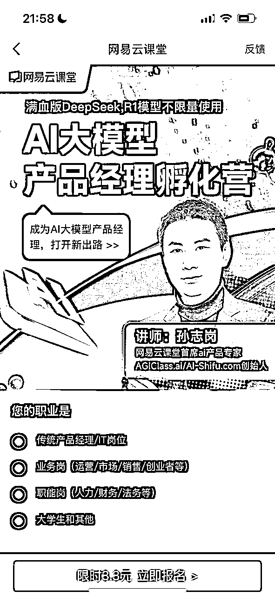
也有圈友发过这方面的风向标（感兴趣的可以进一步了解深挖下）：AI产品经理培训市场火爆！
面向职场人士，提供AI技能进阶课，助力职场人士掌握核心技能，提升竞争力，也是一个不错的方向。值得注意的是，技能进阶课一般面向是有经验的在职人员，培训周期一般是2-7天不等。而求职就业课，一般是面向0基础未就业人士，培训周期至少在2个月以上。
在去年面向职场人士AI数据训练师这个技能进阶就业课很火，然后在去年11月，有圈友也发了个风向标帖子（有142人点赞）：面向新兴岗位 AI 的就职培训，招生规模不断上升
在去年7月的时候，我曾详细调研过这个课程。这个课程早期宣传的海报、文案等明细都还专门保存记录过，也跟大家分享出来：
去年我这边也跟国内一家头部的IT培训机构，针对IT运维推出相应垂直类的技能进阶课程，效果也是不错。课纲课表也跟大家无保留分享出来（红色字体为专门针对IT运维岗位定制的内容）：
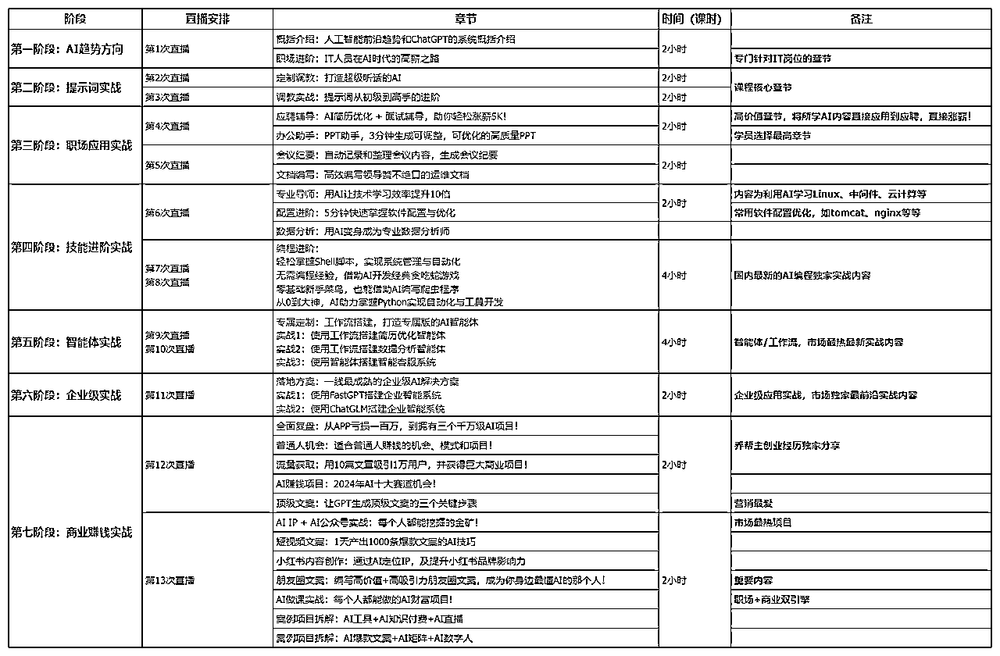
除了跟培训机构这块AI课程合作联合，高校也是一个很重要的市场。高校面向老师、面向学生的AI技能进阶课程，这块市场需求也是很多。这块我用的课程大纲也直接跟大家无保留的分享出来（培训效果也是很不错）：
除了教育方向的AI培训外，再一个方向就是企业AI内训方向。现在是企业AI内训的红利期、红利期、红利期，重要的事情说三遍！
就拿提示词 + 办公应用，这个内容在我们生财圈内，已经没啥竞争优势，大家都会了。但是要知道，我们生财是个信息差的小圈子，领先市场1-2年。
市场上有大量企业还根本不会用AI，尤其是国企、传统非互联网企业。加上DeepSeek的大火，加速了国内企业应用AI的脚步，这块培训需求愈发旺盛。我们做AI培训的老师，基本上最近几个月课程都排满了，原因也是赶上了这个风口。
我这边培训的需求，90%的需求都是集中在提示词 + 办公应用场景需求（部分客户需求截图）：
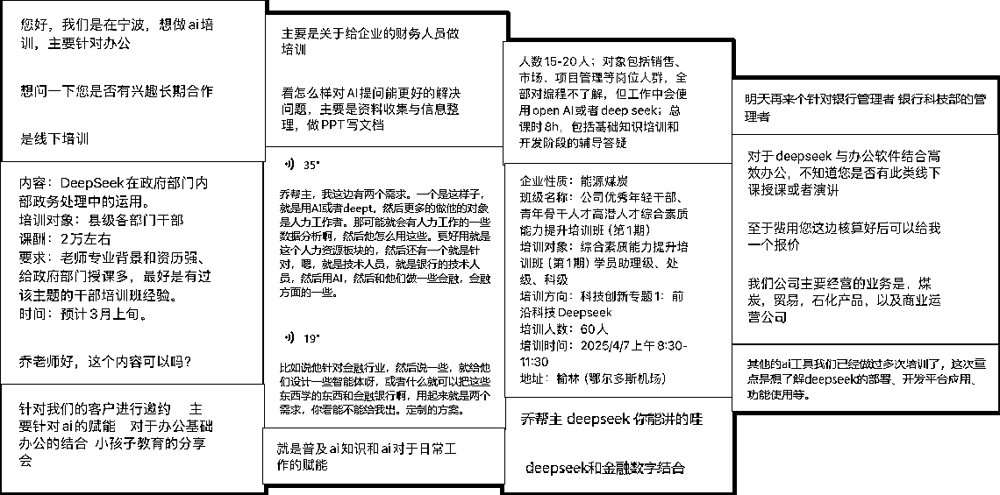
除了通识类的培训外，然后现在很多企业需要针对特定岗位人群的培训。比如针对HR、财务、产品经理、研发人员、运营人员、高管、老板（总裁班），这块需要岗位特点定制垂直聚焦的课程内容，对内容专业性要求也较高。
除了通识类、垂直岗位的AI培训外，再一个就是带解决方案的培训。之前sky在航海家也分享过这块，sky这边跑通了针对鞋服公司AI设计类的培训+解决方案，客单价高达10w/天。
再比如这次3月30日杭州航海家AI大会，包子老师的线下课4999，直接现场瞬间招募了100多个，包子老师的线下课其实也是带解决方案的培训。AI技能的价值是最低的，大家更多关注AI结合直播、短视频，怎么打通自己的工作流。对业务的理解，然后结合AI应用落地，才决定了AI应用维度的上限。
除了以上讲到的两个案例外，AI培训 + 解决方案的未来大有可为。AI的落地，还是得在企业级垂直场景的深度应用，才能真正发挥AI的商业价值。主要我也发现，单纯的通识类培训信息差很快消失，DeepSeek这波企培的红利期预计也就是今年，明年就开始消退。所以针对垂直行业、垂直岗位的定制培训 + 企业解决方案服务，才是我们做AI企培服务的未来。
除了教育方向、创业方向的AI培训外，再一个方向就是创业方向的AI培训。
都说最赚钱的事情就是教人赚钱。为赚钱的人提供赚钱的AI工具，即为掘金者卖铲子、卖水，服务想赚钱的这群人，这绝对是我们用AI赚钱非常好的一个方向。
AI获客，这个词相信大家多多少少都听说过。这个词从去年开始兴起，这两年我感觉都快被搞的烂大街了。就是通过AI数字人、AI矩阵、AI短视频、AI手机（里面有定制的直播等软件）、AI鼠标、AI智能体、AI系统（本质是套壳）等工具，包装成AI营销获客的解决方案。
然后借助市场红利期，面向企业老板、操盘手、个体创业者，通过直播+投流、或者短视频+投流、或者招商加盟的方式获取流量，开这方面的线下课，一般是两天一夜，或者三天两夜，客单价一般是1980、2980。核心变现模式，培训只是引流品，主要售卖后面的AI工具平台、定制陪跑服务等。
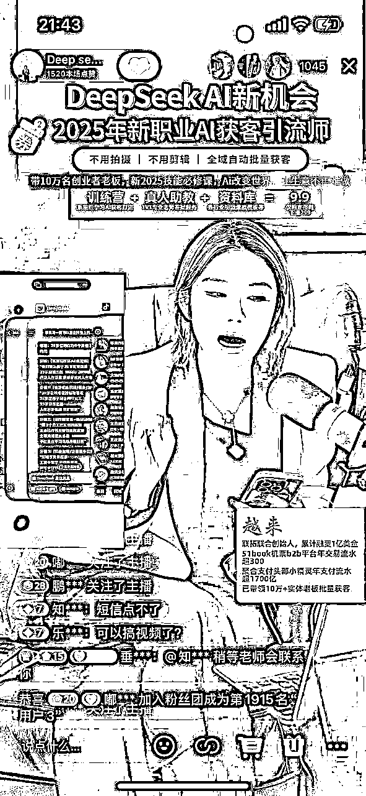
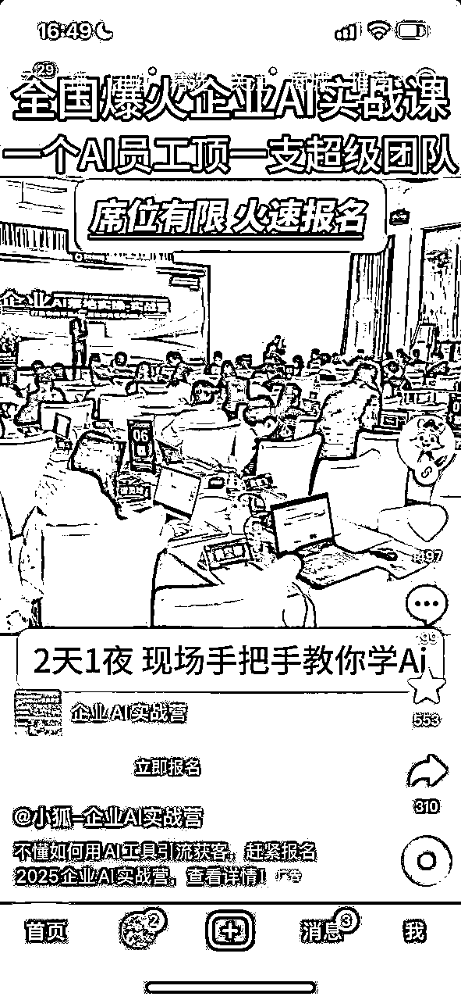
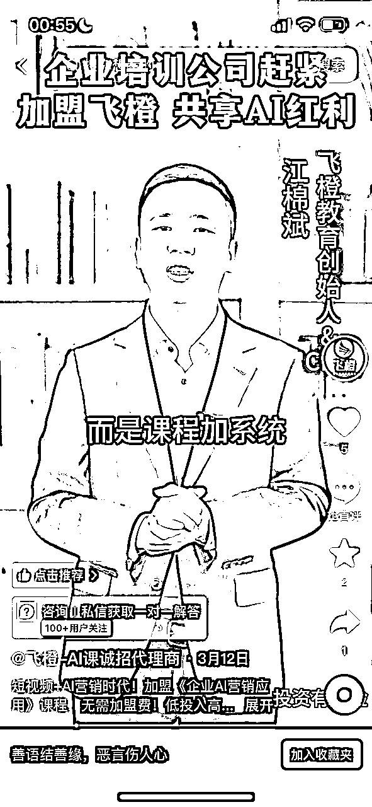
这块对我们也是很好的方向，AI自媒体、AI智能体、AI爆文、AI视频号、AI小红书，选择个垂直细分领域。跟老板、跟操盘手、跟创业者提供垂直聚焦有价值的服务，大有可为。
根据商业方向，我们首先要解决的是，怎么获取需要AI培训的流量，而不是上来就做课程开发，这一点非常重要。甚至我们只需要做个课程大纲，就可以去售卖了。
有人买，我们再做课程开发也不迟。我们开发一个新课，一般都需要1-3个月。上来就闭门造车的做课程，后面做出来又没人买，很有可能时间都浪费掉。
虽然给出了教育、企业、创业三个方向，但有些时候没得你选。并不是你想做哪个方向就哪个方向，而是你身边的资源、圈子决定了你适合做哪方向。
比如我这边有认识的AI培训师，在高校做的风生水起。也有认识的AI培训师，在政府机构、或者在银行做的风生水起。也有认识的AI培训师，就只做线上课，一场公开课发售，轻轻松松几十万入账。核心就是他们的资源、渠道来源，主要为集中在为这方面的客户交付好、服务好就行。
对于很多想要从事AI培训赛道方向的圈友，那我们怎么解决流量获客的问题？主要以下六大方式：
这是你身边的种子用户，我也是主要靠身边圈子的资源，跟几家认识多年的培训机构合作，从0到1、1到10跑通了AI培训。
身边的圈子及资源，是我们起盘的核心重要种子用户资源。特别对于我们在生财的圈友，利用好这个平台及圈子资源，绝对是我们冷启动的最好方式。所以通过朋友圈、公众号、线下活动链接，告诉别人你在做AI培训，跑通0到1这很重要。
以我乔帮主自己真实案例来说，就这两周有个圈友主动找到我谈AI课程深度合作的事情，他们有很强的前端流量能力，但没AI课程交付能力。正好这块我们优势互补，可谓是一拍即合。那到这里，流量问题不就被解决了。
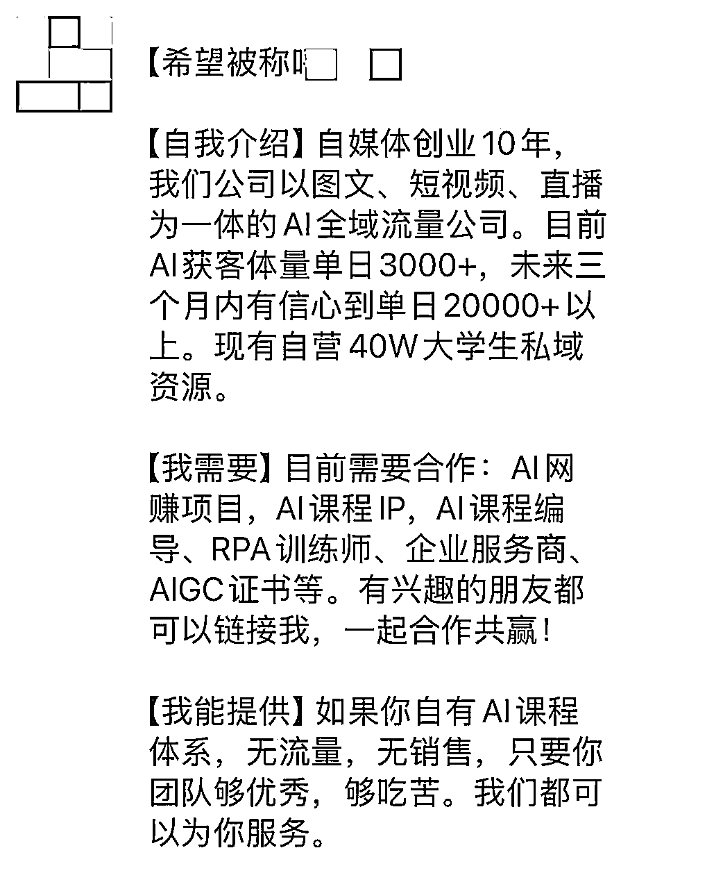
虽然结果是很好的，但要实现这个结果的过程是什么？首先，你作为AI培训师，要有很强的课程能力和交付能力，专业能力这是基础。其次最主要的一点，你要盘活你身边圈子的资源，让你能链接到更多有流量的资源。当时我还特意问了下这个圈友，问他是怎么知道我乔帮主的，他说有好几个大佬推荐了我。
在专业能力基础之上，让圈子内的人都知道你在做什么，良好的口碑并且让别人推荐你，这才算是真正把身边圈子资源盘活。有了这个过程，也才能让你通过合作来解决流量卡点的这个结果。
盘活自己的圈子的资源的执行路径和方法呢？这块也没什么窍门，就是勤能补拙的方式。特别对于新加入生财的圈友，一定要多写帖子、多参加航海（做志愿者、做领队、做航海教练、参与航海实战等等）、多组局，多去链接、多去利他，让别人看到自己的能量状态和价值，才是积累资源、盘活身边圈子资源的有效途径。
就拿我乔帮主自己来说，在生财的成长经历：
如果在生财的成长经历跟乔帮主一样，也做过以上相关事情，基本就很容易通过身边圈子的资源解决流量问题。
流量机构，典型的就是培训机构、有企业资源的服务商、或者高校等。他们在市场积累了一定影响力，也有对应稳定的客群。所以直接跟机构合作，他们解决前端流量，我们做后端课程开发和交付，是很好的一种模式。
怎么找到这方面的流量机构？直接掏出压箱底的经验分享给到大家：那就是在Boss上把自己简历搞好点（简历要侧重关于AI培训的方面的经验介绍），然后找在招AI培训师的机构和公司直接谈合作。一般在Boss发布招聘的机构和公司，都是有直接需求的。我这边好几家重要合作，都是在Boss上找的。
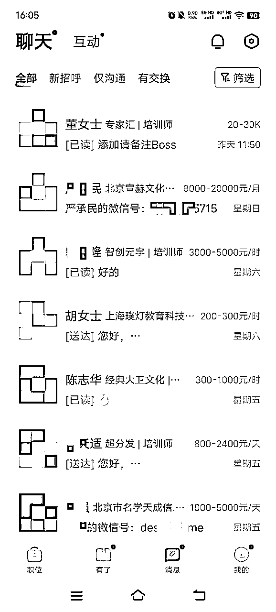
这类指AI自媒体博主，亦仁也发过AI自媒体的超级标。AI自媒体博主通过AI的风口，能在各大平台把账号做起来。他们变现的模式一般是接广告商单。
现在AI培训需求增多，很多企业及机构会通过公域找到自媒体博主，问他们能不能接培训需求，往往这类培训需求对课程和交付都有门槛，所以这时候跟流量博主合作，我们去培训交付，是非常好的一种模式。而且主要也不伤粉，比商单的性价比要高。
比如有两个圈友帮忙推了一个3w和3.5w的培训单子，就帮忙推了个微信及引荐，后续的销转及课程交付都由我跟进交付，我给了30%的分佣（一般市场返佣在20%-30%），返佣9000和10050。
那怎么找到这些流量博主？就是主动出击去链接这些流量博主。要怎么主动出击？之前亦仁花了7w，从一个宝妈手里买了一个加了4000多好友的微信号，我觉得这篇帖子值得大家读读，我也是从亦仁这篇帖子上找到的灵感。
我这边专门雇了个人，专门让她去跟我在Boss上、抖音/视频号/小红书/快手上添加这方面的机构/公司和流量博主的微信，直接撒网式的谈合作。哪怕加了100个人，只有1个人合作，哪怕只有1%的合作，但对我们做AI培训业务的来说也完全足够了（主要是高客单，而且还可能是长期深度合作）。但事实上，我这边加了还不到100人，已经有好几个重要合作了，远超预期了。
经纪公司俗称中介公司。经纪公司手里有大量的培训机构资源，跟经纪公司合作，相当于把培训机构中有AI培训的需求推给你来交付。一般是客户找到培训机构，培训机构再找到经纪公司，经纪公司再给到你去交付，是这么个合作流程。
跟经纪公司合作的优势：排课量有保障，基本上一个月跟你排10次课以上都是问题不大（排课量跟你定价、交付质量等都有直接关系）。所以你也不需要担心流量问题，经纪公司有专门运营团队来帮你包装对接推广。跟经纪公司合作，排课量和流量问题都不需担心。
但同时跟经纪公司合作，劣势也比较明显：
那怎么找到这些经纪公司？可以参加培博会这种大会，里面聚集着大量培训机构和经纪公司，资源扎堆的地方。过去基本上都能链接到自己想链接的经纪公司、培训机构、企业服务的公司。
销售拓客就是把自己当成销售去拓客，这块人效比较低，而且我们培训讲师也不擅长做销售，这块也需要我们长久的积累客户及维持客户，所以并不是特别推荐。
不过自己拓客，没有中间商赚差价，性价比是最高的。我之前积累的一些老客户，跟他们培训，按照市场价2w/天，没有培训机构和经纪公司在中间赚差价，真的很香。
通过IP拓客，是值得大家长久复利的去做。只不过这种方式，需要周期长、积累久。比如我写了两年公众号，虽然粉丝量也就三四千。但是我在公众号上布局了大量AI培训相关的关键词，为SEO做了很多积累。今年DeepSeek大火后，很多培训需求都是通过公众号加的我。
除了公众号，在视频号、抖音、小红书上做IP是很有必要的，通过内容营销为自己推广。不过这个对我们培训师来讲，其实挑战很大。
因为很难把后端课程开发和交付做好的同时，又把前端公域做的很好。所以通过我前面说的几种方式来合作/合伙共赢，是个很不错的方式。
一个是直播投流，然后通过9.9/19.9/39.9等公开课（3天-4天）来销转到我们线下课。不过这要你具有很强的直播能力，这块门槛也是蛮高。比如在前面“1.3、创业方向”中截图的主播越来，从过年期间到现在，借助DeepSeek的热度，一直在直播+投流的方式获客，在杭州开两天一夜线下课（2980），一个月能开个三四场，每场都上百人。
再一个是短视频投流，如果直播能力不够，做一个短视频，来跟这个短视频投流来获客，这种方式很方便高效。不过后面获取客户微信后，还需要进一步销转。比如在前面“1.3、创业方向”中截图的小狐企业AI实战营、飞橙AI课招代理商。
通过上面七种方式解决我们流量获取问题，其中大部分方式：身边圈子的资源、跟流量机构合作、跟流量博主合作、跟经纪公司都是流量渠道合作方式。
那怎么分辨流量渠道的好坏？这个纯属避坑经验了，也是我们在做AI培训赛道方向前期试错的必经之路，很多时候也没办法避免的。我就拿我这边遇到最常见的，跟很多机构合作开班，很多培训机构都是雷声大雨点小，陪着做课程宣传，最后转化的时候惨不忍睹，耗费了很多无效精力。
还有前期很多企业，就想白嫖你。比如你把企业内训课程大纲发过去，他们也不知道你讲的内容对他们有没有价值，所以往往会要求你去免费做1-2小时的分享，然后他们再考虑要不要采购你的内训课程。这种多半你1-2小时的分享后就没下文。
在前期我们做AI培训没有势能，没有案例的时候，并且你课程的营销转化、课程产品、培训交付都还不完善的时候。作为过来人，虽然这些培训机构合作、企业免费分享没有转化结果，但你以此作为试点，来强化你课程的营销转化、课程产品、培训交付等环节能力，从这个角度来讲还是很有必要的。
还是回归到怎么分辨流量渠道的好坏，让大家少踩坑呢。主要通过以下几个指标把控下：
变现转化能力，这是最核心的指标。基本上前期接触一两次，或者做一次公开课分享来试着转化招募下，看看预报名情况，就知道这个流量渠道的实力。如果变现结果不行，要及时止损。
通过直面或者侧面了解合作方的实力，比如团队规模？是否可以看到跟其他培训类项目合作过？结果如何？是否可以看到推广数据（点击量、咨询量、成交量）？
另外合作方如果有运营或者销售团队的话，是更加有利于我们课程营销转化，要不然销转这块还需要我们后端来承接，这块压力也不小的。
最后合作方的对接人也很关键，是否是负责人或者决策人，拥有拍板的权力？最好是直接跟老板谈这块合作，简单直接高效。我这边有跟高校合作，其中跟我对接的就不是负责人和决策人，然后一些重要的合作方案，还要跟他领导确认，谈起来就非常费劲。
跟你对接人的做事方式是否跟你合拍，我觉得也很关键，要不然后面合作起来也是非常费劲。对接人这方面因素也很重要，要不然就趁早及时止损，不要过多耗费无用精力。
在前面通过商业方向选择适合自己的课程内容方向，再通过七种流量获取方式选择适合自己的流量方式，并解决流量问题后，接下来就是销转成交了。
在前面我也提过，在没有流量前、在没有销转成交之前，不要上来就闭门造车的做课程。那没有销转的课程产品，我们怎么销转呢？答案是只需要一个课程大纲即可。
而且课程大纲去公众号上搜下“AI培训”有一大堆，或者在我乔帮主的公众号上抄下相关课程大纲、抄作业也行（本文也发出了几个大纲作为大家参考）。然后结合AI润色下，课程产品就设计出来了。
销转的方式，如果是教育方向、商业方向的C端课程，一般都是通过3-5天的直播公开课来转化成交。3-5天的直播公开课，如果是自己的私域裂变，可以弄成免费的方式，方便裂变。如果是公域直播投流的方式，可以弄成9.9/19.9/39.9等有付费门槛，对用户进一步筛选。公开课的套路，就是秀肌肉+福利刺激下单一套销转模式。这种属于自己开班模式，客单价一般是几百到两三千不等，目的是在线下课再进一步升单高客单价。升单的常见产品，一般是私教、IP陪跑等深度服务。
如果是企业方向的B端内训课程，销转方式，就是卖自己，推销自己，并且讲师大于课程。因为大多课程内容都差不多，除非有一些独家有竞争力的课程内容。讲师的经验、案例是核心的竞争力和差异化，是企业内训成交的关键。企业内训属于专场模式，一般客单价如下：
那怎么做好卖自己呢？在企业内训场景，讲师详细且专业的自我介绍是非常重要的。
在上周，我这边有个4月底在桂林1天的AI培训需求，但课酬我觉得偏低，就准备推给其他人，在圈内问了问有没有感兴趣的。
虽然很多圈友都在毛遂自荐，但是他们发给我的讲师介绍，居然是微信文字版、还有海报版的、甚至还有只是一句话来写下自己的岗位和抬头介绍的。当时我也是被惊呆了，完全是太业余了。
一般标准的讲师介绍，类似简历，要以标准的word/pdf版本。内容一般要包含：讲师简介（包含学历、证书清单）、主讲课程（重要）、课程大纲（重要）、授课风格、服务案例（重要）、授课照片（重要）、授课视频（重要）、客户评价等。
政府类内训合作，很多会走竞标流程，所以AI相关证书，都是加分项。当前人社部和工信部有AI相关证书，阿里、腾讯、华为、微软等云平台也都有他们平台层面的AI证书。还有政府合作要求必须有大厂工作经历，或者学历必须是研究生及以上。
再一个在讲师介绍里面，授课视频也是很重要的。我们B端内训的客户，首次合作，客户对你信任度很低。那证明向客户证明你的课程能力？那就是授课视频（完整的现场30分钟以上的视频）。一般跟培训机构合作，这是标配。
甚至有些客户需要你现场来做20-30分钟试讲，看看你授课能力、表现力、授课风格等等。跟经纪公司合作，试讲也是标配。
很多圈友说，想从事AI培训师方向，还没授过课，没有授课视频怎么办？这个也简单，这个也是多年前一个培训机构负责人给我的建议。在线下，你对着电脑屏幕，用手机录个也行。
等成交转化后，然后就到我们课程内容开发阶段。课程内容设计的质量，直接考验我们AI专业知识的内功积累量。怎么提升自己的AI专业知识？没啥窍门，就是多看、多练，比如把生财里面的AI帖子都看一遍、都实操一遍，那你绝对是市场顶尖的AI专家。
我们在做内容的时候，要找对标、复制爆款等。同样我们做课程产品内容，不要都自己想、自己设计，要学会借鉴、要学会抄作业。
我在2023年做首期AI线下课的时候，基本把其他所有AI课程都看了一遍。这里告诉大家一个很实用的经验技巧，就是在拼多多、淘宝上，搜“AI课程”，很多盗版课。只需要几十块，就能买相关课程，这对我们缺课程内容素材的小伙伴，绝对是一个超级宝库了：
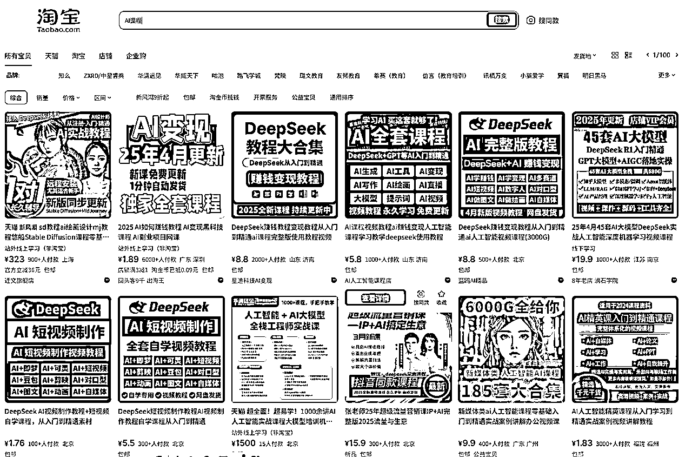
再一个，一定要多刷生财的帖子，我课程内容里面很多的案例，都来源于生财的干货帖以及航海手册。
另外每年我都将收入的30%花在学习上，付费其实是少走弯路最高效的方式。付费不仅可以直接购买他人的经验、案例、素材等，还能直接获取他人圈子的人脉，是非常高效的方式。
不管是盗版课、还是自己付费学习，本质是积累自己的课程内容素材。要想把课程产品设计的有竞争力，还得有自己的理解、自己的东西。一个有竞争力的课程产品，我觉得来源于以下四个维度。
培训课程相比知识付费课程，我觉得最大的区别就在内容设计体系化上。知识付费聚焦在某个技能、某个项目具体的提升，而培训课程不仅包含某个技能、某个项目的提升，更加注重内容的体系化、结构化设计，内容之间都是环环相扣、循序渐进。这样才能让学员，全面体系化掌握知识，才真正能够讲知识融会贯通，而不是零散碎片化掌握知识！
何为体系化？体系化不是大纲目录，体系化就是宏观角度你对课程内容的架构设计。
跟大家举个真实例子。如果你要跟企业设计一门AI内训课程，而且这个内容要有竞争力，那你的课程内容要怎么体系化设计？以我的AI课程内容体系设计为例：
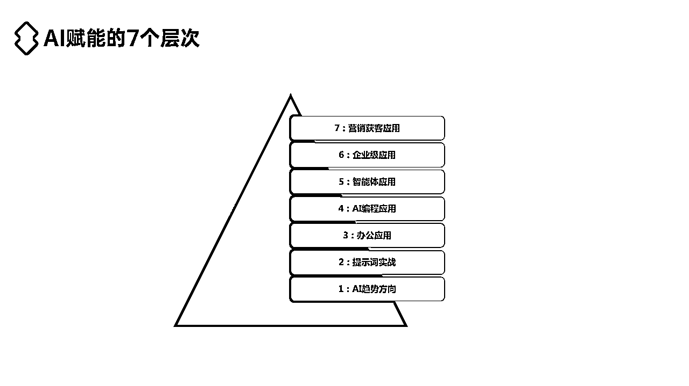
AI的七个层次也是AI应用七个阶段，这个内容体系给到企业，也相当于解决方案。企业根据自身情况需求，再这个内容体系里面选择挑选适合他们阶段的内容。
这七个层次里面，再单独拿一个出来，又可以进一步体系化拆分。就比如拿提示词实战，这个是AI使用的核心也是基础。如果是你来设计这一层次的内容，你要怎么体系化的设计这个内容？
我看过很多同行AI培训师的课件，在提示词这个章节内容，就是简单的提示词框架/提示词模板，这个内容在体系化角度就非常初级业余。让大家看看我设计的提示词内容体系，光提示词的6大体系这个内容就可以讲一天：
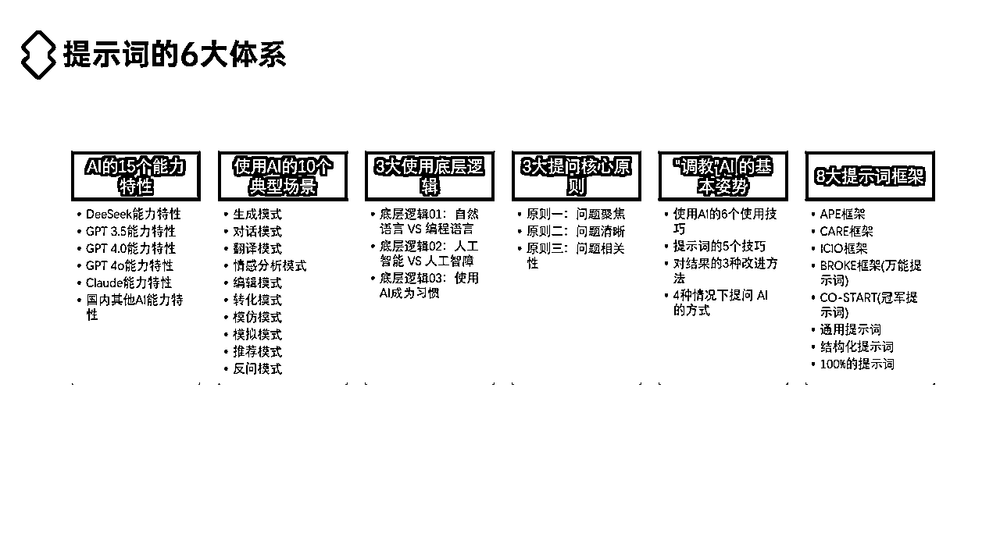
当然我们实际在交付的时候，可能这个体系的内容不会全部讲。你可以在课程里面不讲，但在课程体系里面不能没有。课程体系里面内容选择讲哪些，来源于我们培训学员的需求和背景。所以我们这个课程产品就是一个面向客户，帮忙解决客户需求痛点，体系化、专业且有竞争力的课程。
专业性是通过很多方面来体现，比如前面聊的体系化，及后面讲的实用性、通俗性。这里讲的专业性，重点是细节。前面讲的体系化，是在宏观架构层面，这个是知识的广度。还有个专业性的体现，就是微观细节角度的专业性，即知识的深度。
还是拿提示词举例，同样的讲提示词底层逻辑，很多人讲的细节内容及案例，都是千差万别。主要体现在知识的深度上的不同，就拿我讲提示词使用的底层逻辑中的一页PPT举例：
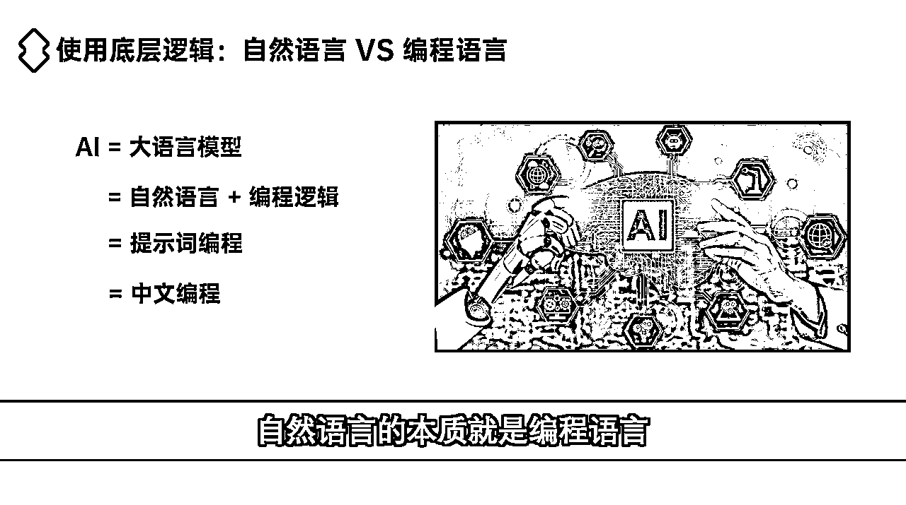
里面每个关键词，每个知识点的细节，都是体现了我们对专业知识深度理解，也是课程内容的扎实。细节决定成败，细节也真正决定了课程内容的专业性。细节知识点，也都是环环相扣，最终形成我们体系化的内容。
另外在课件PPT的美化细节上，一定要美观专业。我看过很多同行AI老师的PPT，弄的太丑了，太简陋了。AI本身就能做PPT内容，做PPT。特别是出来教别人学AI的培训师，自己都没用起来，自己都没整明白，何来教别人。
在细节专业基础上，我们内容要通俗易懂，这点在我们课程产品设计的时候也是非常重要的。之前有个客户就跟我抱怨，说一个AI讲师跟他们公司培训，讲AI大模型底层原理、机器学习、神经网络等复杂知识，听也听不懂。
这里面就在内容通俗性面临两个问题：在一些底层复杂的技术原理这些内容，其实对非技术人员，这些内容都可以不讲。再一个要讲到的一些AI技术的内容，要用通俗易懂的大白话让用户能快速理解这知识。这个也考验我们对专业知识深度理解，只有深度理解后，才能转成成为通俗易懂的表达方式。
课程内容设计的要体系化、专业性、通俗性的基础上，最后就是一定要实用性。
AI作为技术工具，重要的是实操性。所以我们在设计课程内容的时候，一定是要跟学员需求、学员背景相结合的实操实战案例，能真正帮忙学员掌握AI的应用。
在课程内容设计完后，还剩重要的一个就是培训交付。知识付费的课一般是线上录播课，培训类的课，一般是线下面对面授课，线下课的学习体验和效果也是最好的。
课程内容考验的是我们培训师的内功，那培训交付就考验了我们培训师的外功。只有内外功结合，才能将课程真正交付好。
对于很多刚从事AI培训赛道的新手，可能没有做过培训交付，所以这块经验会很欠缺。甚至刚开始上台讲课紧张、说话磕磕巴巴的。那怎么解决这个问题？那就是多试讲练习！
我在2023年正式开线下课之前，就曾在生财线下首次开实操类组局，即要求大家带电脑来参加，然后我带大家实操。那时候做这类实操组局，我最主要是为了磨课，即对课程内容打磨。这是当初线下组局用到的PPT（这个PPT是现场临时生成出来的，也是为了演示AI+PPT的能力），也分享给大家：
除了磨课外，对刚从事AI培训赛道的新手，可以通过试讲好好锻炼下自己的讲课能力。除了在生财组局外，有资源条件的，也可以跟一些机构开些线下沙龙活动。除了能磨课、锻炼演讲能力外，也还能为自己的IP积累势能和人气。
作为一名优秀的AI培训师，要想做到高质量的培训交付，我认为主要需要具备表达能力、演讲能力、控场能力、互动能力这四大交付能力。
表达能力我认为是培训师的基本功，也是基础核心能力。很多人专业能力很强，但没办法讲出来，没办法教别人，那这里就是表达能力不够。
好的表达能力，是能把复杂内容讲清楚、讲明白，逻辑清晰、语言准确。核心是“让人听懂、学会”，是培训师的最基本功底，缺了它，内容再多听众也跟不上。
怎么提升自己的表达能力？主要通过结构思维训练（内容要有“形状”）、举例能力、语言简洁 + 节奏感这三大方面，这块实践经验也为大家整理分享出来。
内容要有“形状”：
练习方法：
练习方法：
练习方法：
如果一个培训师能把技术原理讲得深入浅出，那是表达力强；
如果他还能让大家聚精会神、不走神、时不时笑出声，还能被激发思考，那就是演讲力强；
表达能力是培训师基本功，演讲能力就是培训师的放大器！
演讲能力是能调动氛围、抓住注意力、影响听众情绪和思维的能力。它可以让培训师“发光”，让内容“出圈”。
演讲能力是吸引力、感染力、控场力、互动力的综合体现。那怎么提升演讲能力？主要通过声音+表情+肢体语言、控场节奏、演讲氛围与感染力。
练习方法：
练习方法：
练习方法：
互动能力是指培训师能够有效调动学员参与感、反馈感、投入感，形成教学互动闭环的能力。AI知识比较抽象，互动可以让内容“落地”。在企业内训中，互动=参与度=转化率。自营开班，也是靠互动建立粘性和口碑。
一般我们在开场互动、内容中穿插互动、以及用“任务”做互动等。切忌在课程中不要安排太多互动，导致课程体验就光互动了，这个也是在内容安排上不合理。
互动的本质不是“问”，而是“引发参与”
——用真实感、场景感、轻松感引导学员“愿意说、敢说、说得出”。
应变能力是培训师在面对突发情况、挑战性问题、技术故障、异议学员时，依旧保持专业、冷静、解决问题的能力。
AI是热点，容易出现“杠精”“质疑”“跨界问题”。加上现场多变，技术演示容易出bug。而且内训场景学员多样，难以统一掌控节奏。应变能力，也是让培训师从容应对现场状况。
应变能力常见场景 & 应对技巧如下：
如：“AI说错怎么办？”
我一直喜欢说的一句话，任何时代都不缺赚钱的机会，而是当机会来临时，我们有没有能力抓住。我经常有时候出去谈合作，在没有准备稿件或课件的情况下，会根据现场客户/学员的兴趣、背景和语境，快速组合内容结构，清晰输出且能引发共鸣的能力。
这种时候没有时间给你准备，直接硬上，这非常考验培训师的内容掌控力、快速结构化能力、情境匹配的能力，属于培训师的高阶能力。
应变不是“完美解决”，而是“稳定情绪+专业引导”
专业的内容（30%） + 专业的交付（40%） + 专业的服务（30%）才能成就我们专业的课程产品及口碑。我这边的课程交付服务那真是保姆级的，大家也可以参考下。
课前预习，我们课程一些基础知识等干货，通过录播视频给到学员提前预习准备。在正式课程里面，不占用正式课程时间去讲太多一些理论及基础内容。
结合以上课前、课中、课后的保姆级服务，加上我们高价值的课程内容+体验非常好培训交付，基本上AI培训都能做到业内顶尖级别的存在，毕竟术业有专攻嘛。
AI时代来临，正在高速发展，我们不要成为AI时代旁观观者，而应该成为参与者、见证者！希望本文能给到正在从事AI培训或者想要从事AI培训赛道方向的圈友一些借鉴参考。
商业的本质是利他，但作为AI培训师，作为“老师”的崇高伟大角色，我们思想觉悟和价值观更应该在利他基础之上，真正践行那句：“燃烧自己，照亮他人”！为市场、为社会、为国家、为AI时代培养更多优秀的AI人才！